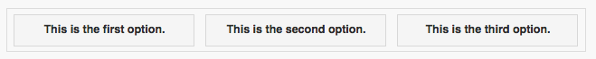

Responsive Design Made Simple
Introduction
Responsive web design (RWD) is a web design approach aimed at crafting sites to provide an optimal viewing experience—easy reading and navigation with a minimum of resizing, panning, and scrolling—across a wide range of devices (from desktop computer monitors to mobile phones). Responsive Web Design is a method of building websites that are highly functional on wide range of desktops & provide “app-like” experiences on smart phones, tablets and e-readers. Responsive design is a preferable alternative to bespoke mobile versions as modern mobile devices are not set to a standard resolution. Producing a specific site for several resolutions would be incredibly time consuming and near impossible to get right.
Traditionally, developers have laid out apps with controls in fixed places. Tools like Visual Studio made this easy: drag and drop your controls where you want them on the design screen and they are fixed in place.
Websites have the ability to resize and flow their elements to adjust to different screen sizes dynamically.
RWD combines the two approaches. Developers can still layout the controls on their apps, but make them responsive to the screen size so they automatically adjust and reflow. In AppStudio 5, we have added the ability to use this in your apps.
A Simple Example
Let's start with an example. We'll set up a Container which holds some buttons:
Container on a narrow screen:

The same container on a wide screen:
{kind=link}

It's the same container. No code is involved: the controls move themselves into position based on the screen width. The height of the container is set to auto, so the border adjusts based on the height of its contents. You don't need to have a border.
How does this work?
One of the style attributes of any control is position. Before AppStudio 5, the only option for this was 'absolute'. Now it can be 'static' or 'relative'. The difference between them is that 'static' ignores top, left, right and bottom, where 'relative' makes use of them. 'Static' is the more pure way of doing this - it is also more predictable.
Starting with 6.0.2, all controls in new containers have position set to 'static'. Forms also have this option: if position is set to static, the controls on the form will all have their position set to static.
The rest of the positioning for the controls is set in the style property of the controls. To center all the controls in the container, we add this to the Container's style control:
text-align:center; margin:auto;
For each button, style is set to
margin: 6px;
This forces a 6 pixel margin around each control.
A Detailed Example
Add a couple of controls
Let's start a new project with some labels and input fields. First, add a Container, a Label and a Textbox.
{kind=link}
- Select Container1 and right click on it. A list of possible children is displayed. Choose Label1.
- Do the same with TextBox1.
- Your Design Screen should now look like this:
{kind=link}
- AppStudio makes some changes to the styling of Label1 and TextBox1 when it adds them to the container, so they will be well behaved responsive elements.
- The left and top properties are changed to 'initial', which lets them flow to where the browser sends them.
- The style property has the string "float:left;" added to it. This makes the controls float to the left as far as possible.
- Label1 floats to the left margin.
- TextBox1 floats to the left until it hits Label1.
Add some Classes
We plan to add a number of labels and textboxes beneath the first two. There are a number of style properties we need to set for each one. Let's make it easy on ourselves by using Classes.
A Class is a collection of style properties. By adding the name of the Class into an control's class property, the control will automatically get the style properties of the class. It's a big timesaver. It's also easier to make a single change to a class than to modify every control. Controls can have multiple classes.
- Open an editor window for 'styleheaders' in Project Properties. Enter the following:
.myLabel {
width: 120px !important;
height: 30px !important;
margin: 6px !important;
line-height: 30px;
}
.myTextbox {
width: 120px !important;
margin: 6px !important;
}
The above is in CSS (Cascading Style Sheets) format. It's a very powerful tool. The above statements set style properties. You can see the complete list here.
Each rule starts with an identifer, followed by a list of styles wrapped in curly braces. The identifier indicates which controls will be affected by the rule. There are many options for identifiers, but here are a few important ones:
| Identitier | Applies to |
|---|---|
| .myClass | Any control which has 'myclass' in its class property |
| #PictureBox1 | A control with the id of PictureBox1 |
| button | Any element of type button. |
Elements assemble their style attributes from a number of places. If the control is based on jQuery Mobile, it may have several classes already defined. AppStudio also applies some, based on the control's properties and definition. By putting !important after one of the properties, we indicate that we want this one to override any values for the same property.
- In the class property of Label1, enter myLabel.
- In the class property of Label2, enter myTextBox.
- Now, repeat this a few more times, adding labels and textboxes.
- You should end up with this:
{kind=link}
Using calculations in bounds properties
Ever try to center a button on a form? Dead center, from top to bottom, from right to left, no matter how the size of the form changes?
You can't put a number like 100 into the left or top property. It won't respond to different screen sizes.
You can't put a percentage (like 50%): it will align the top or left of the button at 50%, not the center of the button.
There's a handy calc() function you can use instead.
Put the following into your left and top properties:
left: calc(50% - 100px/2) top: calc(50% - 40px/2)
The 50% gets us the middle of the form, no matter what its current size. The button is 100px by 40px. We divide those values by 2 to put half the control to the left or top of the middle.
Here's how it looks:
{kind=link}
Here are a few notes about its usage:
- You can use the 4 basic operators: +, -, *, /.
- Spaces are required on both sides of the operators.
- This is only at Design Time, not Runtime. You can use it in Project Properties, but not in your code.
- You can mix %, px and other measurement types.
- You can use this in any css field which needs a size, such as borders, margins, font sizes, etc.
- You cannot use any variables: just actual sizes.
Bonus Feature: min() and max()
If you like calc(), you’ll love the min() and max() functions. They accept two or more comma-separated values and return the minimum or maximum accordingly, e.g.
width: max(50%, 100px) height: min(10%, 20px)
This sets the width to half the screen width, or 100px, whichever is more. It sets the height to be 10% of the screen size, but not less than 20 pixels.
This can prevent an element from getting too big (or too small) if the screen size changes.
Forms
So far, we have worked with Containers. The same techniques will work on forms. Forms have a position property. If that is set to 'static' or 'relative', all controls on that form will use that same positioning.
To make a form which is a maximum 1000 pixels wide, which floats in the middle of the web page, put this in the form's style property:
max-width:1000px; margin-left:auto; margin-right:auto;
Media Queries
Media Queries are simple filters that can be applied to CSS styles. They make it easy to change styles based on the characteristics of the device rendering the content, including the display type, width, height, orientation and even resolution.
Here's a simple example of how you would use a Media Query to adjust your app if it was running in Portrait or Landscape mode:
@media (orientation:portrait) {
#PictureBox1 {width:300px; height: 200px}
}
@media (orientation:landscape) {
#PictureBox1 {width:600px; height: 400px}
}
These rules draw the PictureBox1 in different sizes depending on the screen orientation.
Here are the attributes you can test in a media query:
| attribute | Result |
|---|---|
| min-width | Rules applied for any browser width over the value defined in the query. |
| max-width | Rules applied for any browser width below the value defined in the query. |
| min-height | Rules applied for any browser height over the value defined in the query. |
| max-height | Rules applied for any browser height below the value defined in the query. |
| orientation:portrait | Rules applied for any browser where the height is greater than or equal to the width. |
| orientation:landscape | Rules for any browser where the width is greater than the height. |